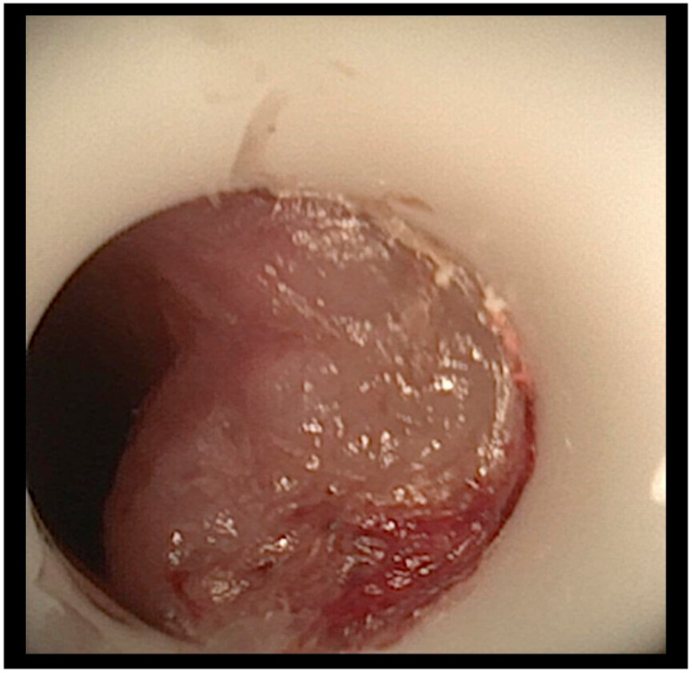
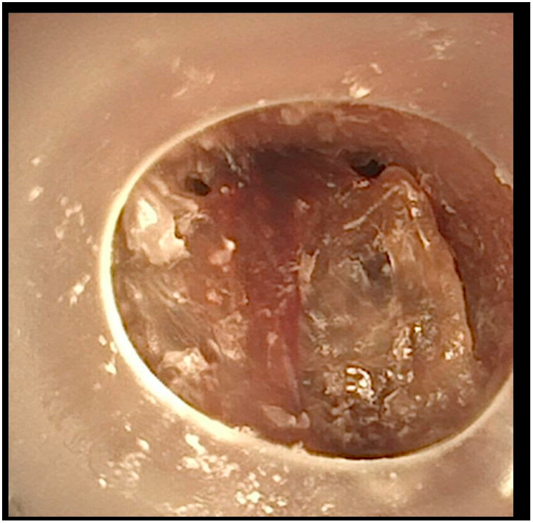
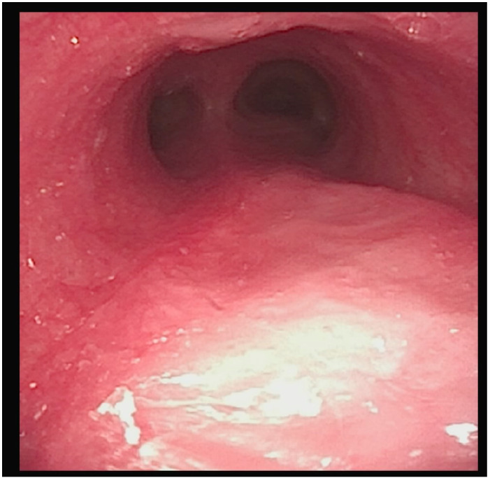
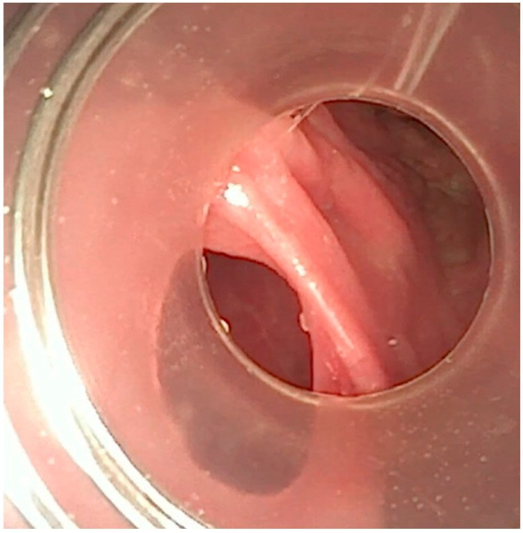

6144 — Nội soi thanh–khí quản định kỳ ở trẻ có ống mở khí quản / Surveillance bronchoscopy in children with tracheostomy
Tags: pattern:u-hat pattern:hep-duong-tho pattern:xep-phoi pattern:nut-nhay vung:duong-tho-nhi vung:thanh-quan protocol:noi-soi-khi-quan protocol:CT-co-nguc score:Cotton-Myer
Mức chắc chắn (certainty): tổng hợp y văn (literature synthesis) — 4 ca biến chứng khí quản muộn ở trẻ thở máy dài ngày (Children (Basel) 2025, PMCID PMC12191466); 303 trẻ trong nghiên cứu giám sát nội soi (dẫn trong cùng bài); khảo sát 138 bác sĩ tai–mũi–họng nhi về thực hành mở khí quản (Laryngoscope Investig Otolaryngol 2026, PMCID PMC13015836); 234 trẻ mở khí quản tại PICU, 121 trẻ theo dõi cai ống (Front Pediatr 2025, PMCID PMC13485925); 175 trẻ về sụp trên lỗ mở và biến dạng chữ A (PMC10866584, đã dẫn ở bài 6100). Chưa có thử nghiệm ngẫu nhiên so sánh các khoảng nội soi — phần "bao lâu một lần" là tổng hợp khuyến cáo, không phải bằng chứng cấp I.
Câu hỏi thực hành: bé trai 5 tuổi, bệnh não do thiếu oxy – thiếu máu, mở khí quản 2 năm, thở máy ban đêm. Ba tuần nay cần hút nhiều hơn, có lúc tụt SpO₂ đột ngột rồi tự hồi, không sốt, X-quang ngực không đám mờ mới. Bác sĩ hỏi: "X-quang bình thường thì có cần nội soi không? Nội soi định kỳ bao lâu một lần? Khi nào nội soi cấp cứu?" Bài chốt năm quyết định: (1) X-quang bình thường không loại trừ u hạt/nút nhầy — phần lớn bất thường chỉ thấy bằng nội soi; (2) 55,1% trẻ có ống mở khí quản có ≥ 1 tổn thương khí quản, hay gặp nhất là u hạt quanh lỗ mở, sụp trên lỗ mở, u hạt quanh da; (3) ATS khuyến cáo nội soi ống mềm/ống cứng mỗi 6–12 tháng, khảo sát 2026 cho thấy 63% đơn vị có nội soi giám sát, chủ yếu 2 lần trong năm đầu; (4) nút nhầy gây ngừng tim – ngừng thở ở 7/70 trẻ (10%) trong 7–90 ngày đầu — nội soi phát hiện và lấy nút là can thiệp cứu mạng; (5) nội soi cấp cứu khi chảy máu, khó thông khí, không đổi được ống, nghi rò khí–thực quản — không chờ lịch định kỳ.
1. Tổng quan bệnh học – cơ chế hình ảnh: vì sao "ống thở tốt" vẫn làm hư khí quản
- Ống mở khí quản là vật lạ vừa thông khí vừa cọ xát. Ống tì vào thành trước khí quản và đầu ống cọ vào niêm mạc ở mỗi lần cử động đầu, hút đờm, thay ống; đồng thời ứ đọng chất tiết + màng sinh học (biofilm) quanh ống tạo viêm mạn. Kết quả là mô hạt (granulation tissue) — mô viêm giàu mạch, dễ chảy máu, mọc từ quanh lỗ mở lan vào lòng.
- Vì sao u hạt nguy hiểm hơn "cục thịt nhỏ": sức cản đường thở R ∝ 1/r⁴; ở khí quản trẻ đường kính 4–6 mm, một khối u hạt làm hẹp 50% đường kính làm tăng sức cản ~16 lần. Ca 1 của PMC12191466: u hạt dưới đầu ống chắn 60% lòng khí quản, trẻ chỉ biểu hiện khó thở khi thở máy và có máu trong dịch hút — không sốt, không đám mờ trên X-quang.
- Vì sao sụp trên lỗ mở (suprastomal collapse) xuất hiện muộn: ống làm thiếu máu – tiêu sụn đoạn khí quản trên lỗ mở; khi rút ống hoặc khi ống nhỏ hơn, đoạn mất giá đỡ lồi vào lòng khi thở ra. Trong 175 trẻ: sụp 55% (trung bình sau 17,7 tháng, ước tính 73,7% ở 5 năm), biến dạng chữ A 18% (ước tính 32,8% ở 5 năm); 56% (18/32) biến dạng chữ A xuất hiện sau khi đã cai ống (PMC10866584, dẫn ở bài 6100). Đây là lý do nội soi trước và sau cai ống đều cần.
- Vì sao nút nhầy (mucus plug) là nguyên nhân tử vong hàng đầu: trẻ có ống không ho được qua thanh môn, chất tiết khô dính thành nút đặc bít lòng ống; 18,2% gia đình báo từng gặp nút nhầy và 17,6% từng bị rơi ống (PMC12191466). Trong một nghiên cứu Canada, nút nhầy hình thành trong viện gây ngừng tim – ngừng thở ở 7 trẻ (10%) trong 7–90 ngày sau mở khí quản — nội soi lấy nút là can thiệp cứu mạng, không phải "làm cho đẹp hồ sơ".
- Vì sao X-quang không đủ: X-quang thấy vị trí ống, bóng khí, đám mờ phổi, nhưng không thấy u hạt mềm, sụp thành trước, nút nhầy không cản quang, lỗ rò nhỏ. CT lát mỏng 1 mm thấy hẹp lòng, biến dạng, vôi hóa sụn, nhưng không thay thế nội soi để can thiệp (lấy nút, đốt u hạt, đặt stent).
- Định lượng gánh nặng tổn thương: trong 303 trẻ được nội soi giám sát, 55,1% có một hoặc nhiều tổn thương; hay gặp nhất là u hạt trên lỗ mở, sụp trên lỗ mở, u hạt quanh da (mức nhẹ); u hạt khí quản xa 4,9% và loét khí quản 1,3% (mức nặng). Thời gian trung vị từ mở khí quản đến nội soi đầu tiên là 13 tháng, khoảng cách giữa các lần sau 7 tháng; trẻ nội soi trong 6 tháng đầu ít có bất thường hơn — gợi ý thời điểm nội soi quan trọng hơn tần suất.
- Định lượng hậu quả cai ống: 234 trẻ mở khí quản tại PICU, 121 trẻ theo dõi đủ: 54,5% có ≥ 1 biến chứng, 51,2% biến chứng muộn; 87,6% cai ống được, trung vị 126 ngày (IQR 68–332). Tuổi ≤ 1 năm, bệnh tắc nghẽn đường thở, phản xạ ho kém là yếu tố cai ống muộn độc lập; mô hình phối hợp AUC 0,854 (PMC13485925).

Hình 1 của bài gốc: u hạt (granuloma) dưới đầu ống mở khí quản, chắn 60% lòng khí quản; trẻ biểu hiện khó thở khi thở máy và có máu trong dịch hút, không sốt, X-quang không đám mờ mới. Nguồn: Children (Basel) 2025, PMCID PMC12191466, CC BY 4.0 — nguyên bản, không crop.2. Mẫu hình + chẩn đoán phân biệt theo vị trí (Gamut)
- Mẫu hình "trẻ có ống mở khí quản xấu dần mà X-quang bình thường": nghĩ đến tắc ống do nút nhầy/u hạt, sụp trên lỗ mở, rò khí–thực quản, nhiễm trùng, tràn khí màng phổi. Thứ tự xử lý: kiểm tra ống – hút – nội soi, không chờ CT.
- Gamut theo tầng giải phẫu (đọc từ trên xuống):
- Quanh da – lỗ mở: u hạt quanh da, nhiễm khuẩn lỗ mở, chảy máu, hẹp da.
- Trên lỗ mở (suprastomal): u hạt "nắp", sụp thành trước, biến dạng chữ A — chắn ngay trên đầu ống, cản cai ống.
- Đầu ống – khí quản xa: u hạt, loét, nút nhầy, ống quá dài chạm carina, ống sai cỡ.
- Thành sau khí quản: rò khí–thực quản, biến dạng thành sau do bóng ống.
- Dưới thanh môn: hẹp sau đặt ống kéo dài (bài 3047), dính dây thanh.
- Phổi – màng phổi: viêm phổi – xẹp phổi, tràn khí, xẹp do tắc.
- Gamut theo triệu chứng khởi phát:
- Tụt SpO₂ từng cơn, hút ra ít đờm: nút nhầy hoặc u hạt chắn đầu ống.
- Chảy máu qua lỗ mở: u hạt, loét, TIF (rò khí quản–động mạch không tên) — cấp cứu.
- Sặc khi ăn/uống, viêm phổi tái diễn: rò khí–thực quản hoặc hít sặc (bài 6123).
- Khó thay ống, không đưa được ống: hẹp lỗ mở, u hạt, ống sai cỡ.
- Sốt + tăng tiết + đám mờ mới: nhiễm trùng liên quan ống (bài 6124), không phải u hạt.
- Ba câu hỏi phải trả lời mỗi lần nội soi: (1) có tổn thương chắn lòng không (u hạt, sụp, nút nhầy) và mức hẹp bao nhiêu %; (2) tổn thương ở tầng nào (trên lỗ mở / đầu ống / khí quản xa / thành sau); (3) can thiệp gì ngay (lấy nút, đốt u hạt, đổi ống, đặt stent, chuyển mổ).
3. Bảng so sánh phân biệt (ma trận đối chiếu)
| Thực thể (entity) | Hình ảnh / nội soi điển hình | Chốt vào (rule-in) | Chốt loại (rule-out) | Gợi ý xác nhận |
|---|---|---|---|---|
| U hạt quanh/dưới đầu ống | Nội soi: khối mô hồng – đỏ, dễ chảy máu, chắn một phần lòng; CT: mô mềm trong lòng | Khối thấy trên nội soi + chảy máu khi chạm + hẹp lòng đo được | Niêm mạc nhẵn, không khối, lòng mở đều | Nội soi ống mềm; đốt/lấy mẫu |
| Sụp trên lỗ mở (suprastomal collapse) | Nội soi: thành trước lồi vào lòng khi thở ra, mềm; CT: hẹp động thì thở ra | Sụp thấy khi thở ra, hồi phục khi hít vào | Hẹp cố định do xơ/sụn → hẹp thật | Nội soi + CT động/thì thở ra |
| Biến dạng chữ A (A-frame) | CT/nội soi: hai bên thành bên đổ vào, lòng hình chữ A; thường sau cai ống | Hình chữ A trên CT + tiền sử ống lâu | Hẹp chu vi đều → xơ đồng tâm | CT lát mỏng, nội soi |
| Nút nhầy (mucus plug) | Nội soi: khối trắng – xám, dai, bít lòng ống/khí quản; X-quang có thể bình thường | Lấy được nút + SpO₂ cải thiện ngay | Không có khối, chỉ ứ dịch lỏng | Nội soi cấp cứu, hút |
| Rò khí–thực quản (TEF) | Nội soi: lỗ rò thành sau, thấy niêm mạc thực quản; VFSS/CT nằm sấp: thuốc vào khí quản | Lỗ rò thấy trực tiếp + thuốc thực quản → khí quản | Chỉ hít sặc từ trên xuống qua thanh môn | Nội soi + VFSS/CT nằm sấp |
| Nhiễm trùng liên quan ống | X-quang/CT: đám mờ mới, có thể áp-xe; nội soi: mủ, niêm mạc viêm, không khối | Sốt + đám mờ mới + cấy dương | Không sốt, không đám mờ, chỉ khối cơ học → u hạt | Cấy dịch, X-quang/CT (bài 6124) |
| Hẹp dưới thanh môn | Nội soi: vòng xơ dưới dây thanh; CT: hẹp cố định | Hẹp cố định, không đổi theo thì thở | Hẹp động, hồi phục → malacia/sụp | Nội soi + CT (bài 3047) |
| TIF (rò khí quản–động mạch không tên) | Chảy máu "báo trước" qua lỗ mở; CTA: động mạch không tên sát khí quản, giả phình | Chảy máu + SCD < 20 mm + CTA thấy mạch sát khí quản | Chảy máu chỉ từ u hạt, cầm khi đốt | CTA/soi mạch cấp cứu |
4. Protocol nội soi + hệ phân độ và lịch theo dõi
4.1 Chuẩn bị và kỹ thuật
- Nội soi ống mềm (linh hoạt) tại giường/buồng mổ: đánh giá lỗ mở, đoạn trên lỗ mở, đầu ống, khí quản xa, carina, phế quản gốc; hút sạch trước khi đánh giá; không bơm quá nhiều nước ở trẻ nhỏ.
- Nội soi ống cứng khi cần can thiệp (lấy nút lớn, đốt u hạt, nong, đặt stent) hoặc kiểm tra thành sau.
- An thần/giảm đau theo cân nặng; theo dõi SpO₂, ETCO₂, huyết áp; nguồn oxy và ống thay thế cùng cỡ phải có sẵn — nội soi ở trẻ có ống mở khí quản là thủ thuật có nguy cơ mất đường thở.
- CT cổ–ngực lát mỏng 1 mm khi cần đánh giá hẹp cố định, biến dạng chữ A, SCD, khối ngoài lòng; không dùng CT thay nội soi để lấy nút.
4.2 Lịch nội soi — tổng hợp khuyến cáo (chưa có RCT)
| Thời điểm | Khuyến cáo thực hành | Cơ sở |
|---|---|---|
| 4–6 tuần sau mở khí quản (hoặc trước xuất viện) | Nội soi đầu tiên để có mốc nền: vị trí ống, u hạt sớm, sụp, rò | ATS khuyến cáo nội soi định kỳ; thực hành hay bỏ qua giai đoạn này |
| Mỗi 6–12 tháng | Nội soi giám sát ở trẻ còn ống, đặc biệt < 2 tuổi | ATS 6–12 tháng; hướng dẫn Đức hàng năm; khảo sát 2026: 63% đơn vị có nội soi giám sát, 34% làm 2 lần trong năm đầu |
| Trước cai ống | Nội soi bắt buộc để loại u hạt, sụp, hẹp, rò | Sụp 55%, chữ A 18%, nhiều tổn thương xuất hiện sau cai |
| Sau cai ống 3–6 tháng | Nội soi/CT kiểm tra sụp và chữ A | 56% chữ A xuất hiện sau cai ống |
| Cấp cứu — bất kỳ lúc nào | Chảy máu, khó thông khí, không đổi được ống, nghi rò khí–thực quản, tụt SpO₂ tái diễn | Nút nhầy gây ngừng tim 10% trong 7–90 ngày; TIF 0,1–1% |
- Không có bằng chứng rằng nội soi thường quy mỗi 3 tháng tốt hơn 6–12 tháng; khảo sát cho thấy thực hành rất khác nhau, nên phác đồ của đơn vị + đánh giá từng trẻ quan trọng hơn con số cứng.
- Ai cần nội soi dày hơn: trẻ < 2 tuổi, bại não/vẹo cột sống nặng, tiền sử u hạt/nút nhầy, thay ống khó, cai ống thất bại, thở máy dài ngày.
4.3 Phân độ hẹp và xử trí
- Hẹp dưới thanh môn: Cotton–Myer I < 50%, II 51–70%, III 71–99%, IV không có lòng — dùng cho tổn thương dưới thanh môn, không áp cho u hạt quanh ống.
- U hạt: đốt bằng laser/điện/argin plasma nếu chắn > 30–50% lòng hoặc gây triệu chứng; lấy mẫu nếu nghi ác tính (hiếm ở trẻ).
- Nút nhầy: lấy bằng ống mềm + kẹp/bơm rửa, sau đó làm ẩm khí, thay ống đúng cỡ, hướng dẫn gia đình hút đúng độ sâu.
- Sụp/chữ A: nong, stent, hoặc mổ tạo hình khí quản khi cản cai ống; không đốt vì tổn thương là sụn mất giá đỡ, không phải mô thừa.
- TEF: ngừng ăn đường miệng, nuôi qua sonde, nội soi + CT, phẫu thuật vá khi ổn định; không đặt stent thực quản trước khi đánh giá kỹ.
flowchart TD
A[Trẻ có ống mở khí quản: tụt SpO2, tăng hút, khó thở máy] --> B{Kiểm tra ống: thông? đúng cỡ?}
B -->|Không thông| C[Hút + thay ống ngay; nội soi cấp cứu]
B -->|Thông| D{Nội soi ống mềm}
D --> E{Tổn thương gì?}
E -->|Nút nhầy| F[Lấy nút + làm ẩm khí + hướng dẫn hút]
E -->|U hạt chắn >30-50%| G[Đốt u hạt + kiểm tra lại]
E -->|Sụp/chữ A| H[CT + nong/stent/mổ tạo hình]
E -->|Lỗ rò thành sau| I[Ngừng ăn miệng + CT + mổ vá]
E -->|Không tổn thương| J[Tìm nguyên nhân khác: nhiễm, tràn khí, thần kinh]
F --> K[Nội soi lại theo lịch 6-12 tháng]
G --> K
H --> K
I --> K

Hình 4 của bài gốc: nút nhầy (mucus plug) bít khí quản — nguyên nhân tử vong hàng đầu ở trẻ có ống mở khí quản; nút nhầy gây ngừng tim – ngừng thở ở 7/70 trẻ (10%) trong 7–90 ngày sau mổ. Nguồn: Children (Basel) 2025, PMCID PMC12191466, CC BY 4.0 — nguyên bản, không crop.5. Biến thể bình thường và cạm bẫy
- Cạm bẫy 1 — "X-quang bình thường nên không cần nội soi": u hạt, sụp thành trước và nút nhầy không cản quang; X-quang chỉ loại trừ đám mờ phổi lớn/tràn khí. Trẻ tụt SpO₂ tái diễn phải nội soi dù phim bình thường.
- Cạm bẫy 2 — gọi u hạt là "nhiễm trùng": u hạt không đáp ứng kháng sinh; cho kháng sinh kéo dài chỉ trì hoãn can thiệp và tạo kháng thuốc. Ngược lại, sốt + đám mờ mới là nhiễm trùng thật (bài 6124), không phải u hạt.
- Cạm bẫy 3 — nội soi quá nông: chỉ nhìn đầu ống sẽ bỏ sót u hạt khí quản xa (4,9%), loét (1,3%), rò thành sau. Phải đi qua đầu ống tới carina, nhìn thành sau khi rút ống ra một phần.
- Cạm bẫy 4 — bỏ qua "chảy máu nhỏ": chảy máu lỗ mở ở trẻ SCD < 20 mm có thể là tiền triệu TIF; không hút mạnh, không thay ống mù, cần CTA/soi mạch.
- Cạm bẫy 5 — nội soi xong không thay đổi gì: nội soi giám sát chỉ có giá trị nếu ghi lại tổn thương, mức hẹp, vị trí và đối chiếu lần trước; nếu không, không phân biệt được tiến triển với bất thường cũ.
- Biến thể bình thường: u hạt nhỏ quanh da/lỗ mở không chắn lòng có thể chỉ theo dõi; mô hạt nhẹ sau mổ 4–6 tuần là phản ứng lành thường gặp, không phải chỉ định đốt ngay.
6. Tự lượng giá — Blind Quiz
Ca 1 — Bé trai 5 tuổi, thở máy qua ống mở khí quản, tụt SpO₂ từng cơn, dịch hút có máu.
- Gợi ý: không sốt, X-quang không đám mờ mới, hút ít đờm.
- Câu hỏi: Tổn thương gì? Vì sao X-quang bình thường? Xử trí?
Bấm để hiện đáp án
- U hạt dưới đầu ống chắn 60% lòng khí quản — mô mềm không cản quang, nên X-quang bình thường; máu trong dịch hút do u hạt dễ chảy máu.
- Nội soi + đốt u hạt, kiểm tra lại lòng khí quản; sau đó theo dõi định kỳ vì u hạt tái phát.
- Nguồn ảnh: Children (Basel) 2025, PMCID PMC12191466, CC BY 4.0.
Ca 2 — Bé gái 8 tuổi, đột ngột không thông khí được, bóng không lên.
- Gợi ý: Trước đó vài giờ vẫn ổn, hút ra ít đờm đặc.
- Câu hỏi: Nguyên nhân? Xử trí đầu tay? Phòng ngừa?
Bấm để hiện đáp án
- Nút nhầy (mucus plug) bít khí quản/ống — nguyên nhân tử vong hàng đầu; nút nhầy gây ngừng tim ở 7/70 trẻ (10%) trong 7–90 ngày.
- Hút + thay ống + nội soi lấy nút ngay; sau đó làm ẩm khí, hướng dẫn hút đúng độ sâu, theo dõi sát.
- Nguồn ảnh: Children (Basel) 2025, PMCID PMC12191466, CC BY 4.0.
Ca 3 — Bé trai 3 tuổi, sau 3 tháng điều trị u hạt, kiểm tra lại.

- Câu hỏi: Đánh giá kết quả thế nào? Khi nào hẹn nội soi tiếp?
Bấm để hiện đáp án
- Niêm mạc hồi phục, lòng khí quản thông sau 3 tháng chăm sóc ống đúng — minh họa rằng can thiệp + chăm sóc ống có thể đảo ngược tổn thương.
- Hẹn nội soi lại 6–12 tháng hoặc sớm hơn nếu triệu chứng quay lại; trước cai ống phải nội soi lại.
- Nguồn ảnh: Children (Basel) 2025, PMCID PMC12191466, CC BY 4.0.
Ca 4 — Bé gái 6 tuổi, viêm phổi tái diễn, sặc khi ăn, nội soi thấy lỗ thành sau.

- Câu hỏi: Chẩn đoán? Vì sao không chỉ tăng kháng sinh?
Bấm để hiện đáp án
- Rò khí–thực quản (TEF) — lỗ rò thành sau khí quản; thức ăn/dịch dạ dày đi thẳng vào đường thở nên kháng sinh không chữa được.
- Ngừng ăn đường miệng, nuôi qua sonde, CT/VFSS xác nhận, mổ vá khi ổn định.
- Nguồn ảnh: Children (Basel) 2025, PMCID PMC12191466, CC BY 4.0.
Bài liên quan chéo
- 6100 – Chăm sóc, biến chứng và cai ống mở khí quản
- 6124 – Nhiễm trùng liên quan ống mở khí quản
- 6123 – Rối loạn nuốt và hít sặc ở trẻ có ống mở khí quản
- 6143 – Cách ly thanh–khí quản và botulinum tuyến nước bọt
- 3047 – Hẹp khí quản sau đặt nội khí quản ở trẻ
- 600 – Tổng quan Hệ Nhi khoa
Không dùng để chẩn đoán độc lập khi chưa có người hướng dẫn.